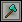

Crea tu primer item
Para un modelo ya existente utiliza la plantilla model_path. Solo necesitas el modelo
base del item y los argumentos del tier.
La plantilla
Crea un archivo en configuration/items/ con este contenido:
items:
NAMESPACE:ID: # Este ID es el que se usará en MMOITEMS (item_model)
material: diamond_sword
template:
- custom_tiers:tiers # Siempre será la misma plantilla
arguments:
type: model_path # Plantilla para modelos ya existentes
tiers: 3 # Cantidad de rarezas, por default 1=COMMON, 2=UNCOMMON, 3=RARE
#tier_1: RARE
#tier_2: EPIC # Si descomentas estas 3 lineas, esos serán los 3 tiers posibles
#tier_3: LEGENDARY
display: rare # Rareza que se mostrará en CustomTiers
model_path: minecraft:item/diamond_sword # Ruta del modeloLos argumentos del ejemplo
| Argumento | Qué hace |
|---|---|
template: custom_tiers:tiers | Activa el formateador de tiers del addon. |
type: model_path | Usa la plantilla del modelo ya existente. |
tiers: 3 | El item admite 3 tiers, por default: common, uncommon y rare. |
display: rare | El tier que se muestra por defecto. |
model_path | Es una ruta de modelo (no de textura). |
Después de guardar:
/ce reload all
/ce item get NAMESPACE:IDEstados del item
El fondo cambia según el contexto.
Por defaultInventario normal.

En manoItem seleccionado en hotbar.
Tomado de inventarioMoviendo dentro del inventario.
¿Textura propia?
model_path apunta a un modelo existente. Si quieres una textura nueva, crea un modelo
con "parent": "minecraft:item/generated" y usa su ruta como model_path.
Siguiente: los argumentos que comparten todas las plantillas.